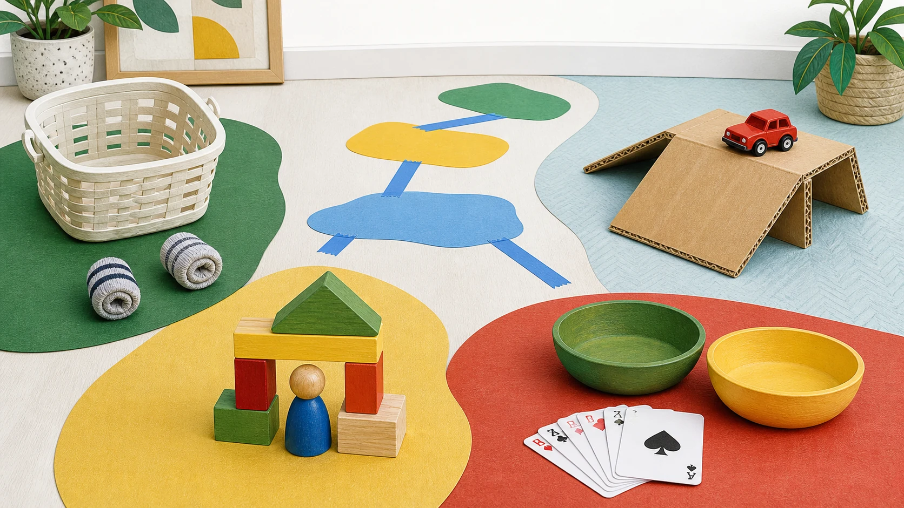

The useful question is not how many ideas you can collect. It is what fits this child, this room, and this moment. Start with one bounded choice, then use the rescue or stop instead of forcing it.
Start here: Clear one short floor lane, place a low empty basket at the far end, and roll two bundled socks toward it. Walk to reset. If throwing or running starts, stop and clear the lane.
This chooser reconciles current extension, education, and publisher sources with Kid Activity Lab editorial guidance. Kid Activity Lab has not family-tested these setups. Fit, timing, mess, engagement, enjoyment, learning, repeatability, and safety outcomes are unknown.
Check the real room and every child who can reach it
Check every child who can reach the setup, not only the intended preschooler. Clear one defined area away from stairs, doors, pets, breakable objects, and active walkways. Remove damaged materials. If any child may mouth a piece, use larger solid materials, stay within reach, and watch continuously. Choose the direct supervision and stopping point the actual room and child require.

Kid Activity Lab illustration of five indoor activity routes. It is not a family-test photo and does not show measured use.
A table or clear floor area; standard cards and the players named by the game
Choose a game by player count and manage the rules and ending
Rainy day is a context
Rotate the job, not the page
Weather may be why everyone is inside, but the next useful choice is still movement, making or building, quieter play, or a game. Rain-themed crafts and weather learning are separate jobs and are not promised here.
These sources support parent-job, category, and activity-shape decisions within the limits shown. They do not establish that Kid Activity Lab ran these setups or measured their fit, timing, mess, safety, engagement, or learning outcomes.
PBS Kids for Parents: Rainy Day ActivitiesBroad publisher hub used to confirm that rainy day is a context spanning movement, making, games, and media rather than a second copy of indoor ownership.